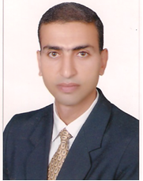

|
معلم حاسب آلي وتكنولوجيا التعليم، أخصائي دعم فني، ومدرب معتمد في الرخصة الدولية لقيادة الحاسب الآلي (ICDL).

سيرتي الذاتية باختصار
معلم حاسب آلي وتكنولوجيا التعليم منذ عام 2001، حاصل على بكالوريوس تربية نوعية من جامعة الإسكندرية بتقدير جيد جداً. أمتلك خبرة واسعة في التدريس، الدعم الفني، تصميم المناهج التعليمية، وإدارة مراكز مصادر التعلم.
مسيرتي المهنية في مجال التعليم وتكنولوجيا المعلومات
تدريس مادة الحاسب الآلي، دعم فني للكمبيوتر والشبكات، وإدارة برامج الإشراف الإلكتروني.
تدريس الحاسب الآلي، إدارة مركز مصادر التعلم وتقنية المعلومات، والإشراف على الموقع الإلكتروني للمدرسة والإدارة.
تصميم وتطوير مناهج تعليمية تفاعلية باستخدام لغات البرمجة وبرامج العروض والوسائط المتعددة.
تقديم الدعم الفني للكمبيوتر والشبكات، تدريب على الرخصة الدولية لقيادة الحاسب الآلي (ICDL)، والإشراف على اختبارات ICDL.
تدريب المتدربين على مهارات الحاسب الآلي، وإجراء اختبارات الرخصة الدولية المعتمدة.
ما أمتلكه من مؤهلات وخبرات
أنا هنا لمساعدتك، لا تتردد في مراسلتي
القاهرة، مصر
00201128351188
Ibr2017@yahoo.com
Ibr2017@gmail.com